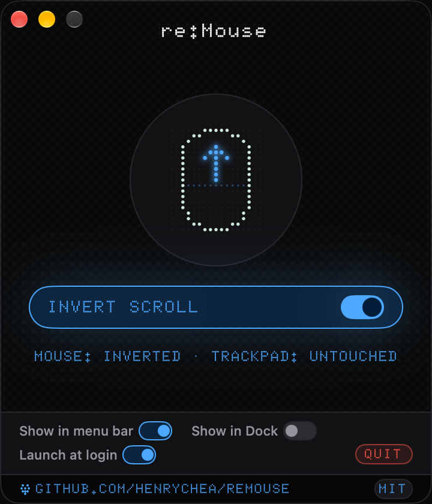
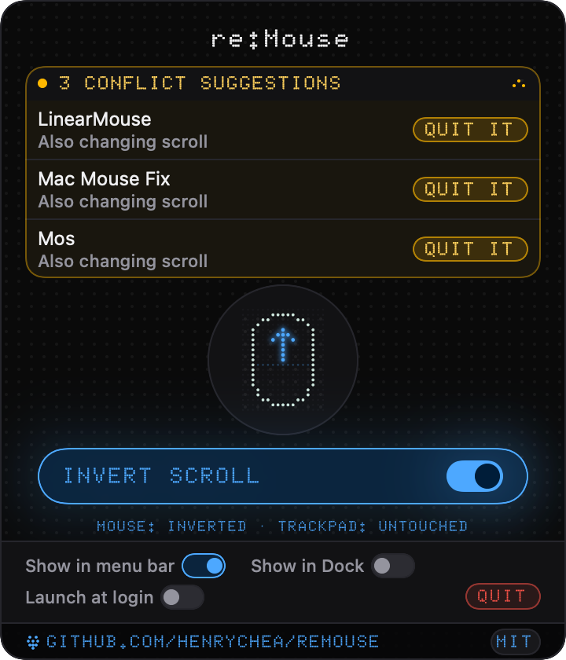
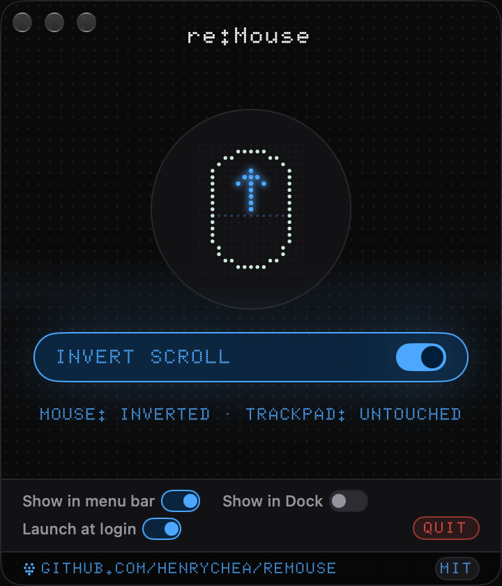

macOS menu-bar utility
Invert your mouse wheel.
Leave your trackpad alone.
re:Mouse flips scroll direction for wheel mice only. Trackpad and Magic Mouse gestures stay natural. One switch, nothing else to configure.
Mouse: inverted · Trackpad: untouched
Click or scroll the mouse to flip it.
Demo
// Features
Does one thing. Gets out of the way.
Wheel only
Discrete wheel events are inverted. Continuous trackpad and Magic Mouse events pass through untouched.
One switch
No per-app rules, no acceleration curves, no button remapping. On or off.
Light
A single event tap. No polling, no helper daemons, no third-party dependencies.
Conflict check
Finds other scroll tools that would double-invert and offers to quit them.
Private
No network access, no analytics, no data stored beyond your settings.
Open source
MIT licensed. Read the whole thing in an afternoon.
// Screens
Small window. Loud dots.





// Conflict check
Two inverters cancel out.
Only one tool should rewrite scroll events. At launch, and each time you switch inversion on, re:Mouse looks for the known scroll inverters and gives each one a Quit button.
| App | Status |
|---|---|
| LinearMouse | Detected |
| Scroll Reverser | Detected |
| Mac Mouse Fix | Detected |
| Mos | Detected |
| UnnaturalScrollWheels | Detected |
// How it works
Continuous or discrete. That is the whole rule.
- 01
A head-insert event tap listens for scroll events in your session.
- 02
Trackpads and the Magic Mouse send continuous events. Those return untouched.
- 03
Wheel mice send discrete events. Their deltas are negated, then passed on.
// FAQ
Questions
Is it free?
Yes. MIT licensed, free to download, use and modify. Builds from source with Xcode 15 or later.
Why not on the App Store?
The App Sandbox blocks changing scroll events: a sandboxed app can only observe them, never invert them. So re:Mouse ships as a free download outside the App Store.
Why not LinearMouse, Scroll Reverser or Mac Mouse Fix?
They are good, larger tools with many options. re:Mouse is for people who want one switch and nothing else.
Does it change my trackpad?
No. Trackpad and Magic Mouse events are continuous, and re:Mouse passes them through unchanged. Keep "Natural scrolling" on in System Settings.
Why does it need Accessibility permission?
macOS only lets apps with Accessibility access install an event tap that can modify input. Grant it in System Settings → Privacy & Security → Accessibility.
Does it collect any data?
No. It makes no network connections and stores only its own settings.
How do I uninstall it?
Quit from the menu bar, delete reMouse.app from Applications, and remove it from the Accessibility list.